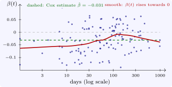

9.2 Schoenfeld residuals
At each event time \(t_{(j)}\), with subject \(i_j\) failing, the Cox model predicts the covariate of the subject who fails: it is subject \(l\) in the risk set with probability \(w_l = e^{\hat \beta ^{\mathsf T}x_l}/\sum _{m \in R_j}e^{\hat \beta ^{\mathsf T}x_m}\). The Schoenfeld residual is the observed minus the predicted covariate, \[ r_j = x_{i_j} - \sum _{l \in R_j}w_lx_l , \] one vector for each event. The residuals sum to zero (this is the score equation that defines \(\hat \beta \)), and if the model is right they have no trend in time. Grambsch and Therneau (1994) showed that the scaled Schoenfeld residuals, \(r_j\) multiplied by the inverse of their variance and added to \(\hat \beta \), satisfy approximately \[ \mathbb E[r_j^*] \approx \beta (t_{(j)}) , \] where \(\beta (t)\) is the coefficient at time \(t\) in a model that allows it to vary. A plot of the scaled residuals against time, with a smooth curve through them, therefore shows how the log hazard ratio changes over follow-up (Figure 9), and a test of zero slope, regressing \(r_j^*\) on a function \(g(t_{(j)})\) of time, is a test of proportional hazards. R’s cox.zph gives this test for each covariate and a global test for all of them, with \(g\) chosen as the Kaplan–Meier transform of time by default.
Example 9.2.1. For the veteran model with treatment, cell type and Karnofsky score, cox.zph gives \(\chi ^2_1 = 0.21\) (\(p = 0.65\)) for treatment, \(\chi ^2_3 = 14.5\) (\(p = 0.002\)) for cell type and \(\chi ^2_1 = 12.8\) (\(p = 0.0003\)) for the Karnofsky score, and a global \(\chi ^2_5 = 22.9\) (\(p = 0.0004\)) (Software 9.4.1). The scaled residuals for the Karnofsky score show that its coefficient, \(-0.031\) on average, is about \(-0.06\) early and near \(0\) after a few months: the performance score predicts early deaths strongly and later ones hardly at all.

Other residuals serve other checks. Martingale residuals, \(\delta _i - \hat H_0(t_i)e^{\hat \beta ^{\mathsf T}x_i}\) (observed minus expected events for each subject), plotted against a continuous covariate left out of the model, show the functional form it should take; deviance residuals, a symmetrised version, help to find poorly fitted subjects; and dfbeta residuals, the change in each coefficient when a subject is removed, find influential observations.
Questions on this section
Stuck on something here? Ask below and it stays attached to this topic.